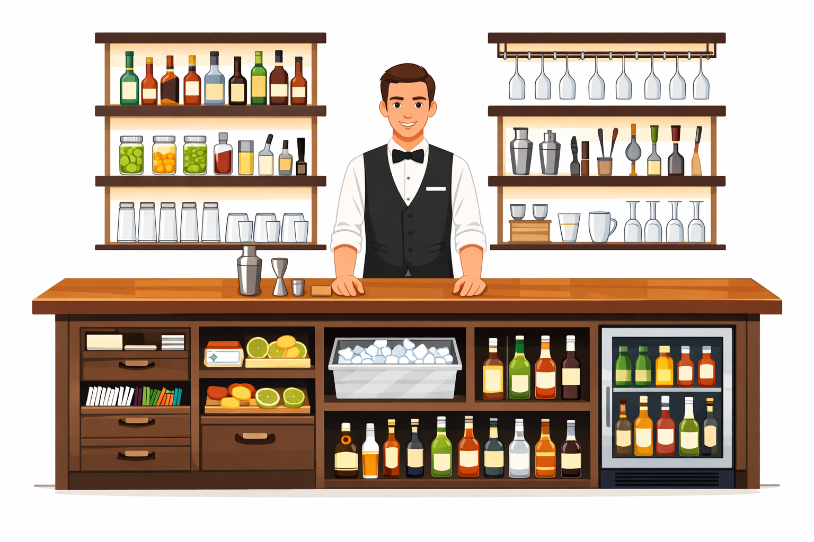
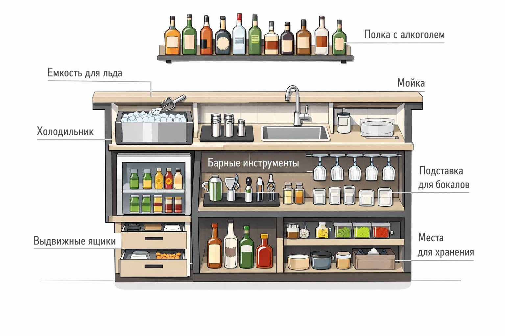

Эргономика бара — это организация рабочего пространства так, чтобы бармен мог работать быстро и без лишних движений, а гости получали заказ без ожидания. Важна не столько эстетика, сколько удобство работы за стойкой.
Если пространство спроектировано грамотно, бармен тратит меньше времени на приготовление напитков, меньше устает и может обслужить больше гостей.
Все предметы должны находиться там, где они нужны в процессе приготовления напитков. Когда бармену приходится тянуться за бутылками, обходить стойку или искать инструмент, работа замедляется.
Эргономика — это область знаний о том, как проектировать пространство и рабочие процессы так, чтобы человеку было удобно и безопасно работать.
В баре это касается не только места бармена. Важны высота стойки, расположение оборудования, расстояние между рабочими зонами, движение сотрудников и гостей.

Чем меньше лишних действий делает бармен, тем быстрее готовится напиток.
Бар — это рабочая зона, где всё происходит быстро, особенно в часы пик. Если пространство организовано неудобно, каждая лишняя секунда начинает влиять на скорость обслуживания.
Когда оборудование, посуда и ингредиенты находятся рядом с рабочей зоной, бармен выполняет действия последовательно и без лишних движений. Это ускоряет обслуживание и помогает справляться с большим потоком гостей.
Форма стойки влияет на движение сотрудников и гостей, количество рабочих мест и скорость обслуживания.
Неудачная форма создает узкие проходы и заторы в часы высокой загрузки.
Каждый бармен работает на своей станции. Она должна содержать всё необходимое для приготовления напитков. Нужно учитывать:
Хорошо организованная станция позволяет готовить напитки практически не отходя от рабочего места.
Оборудование в баре размещают по логике рабочего процесса.
Если эта последовательность нарушена, бармен начинает делать лишние движения.
Работа за баром длится несколько часов подряд, поэтому важны высота стойки, полок и расположение техники.
Узкие проходы создают толкучку. Слишком большие расстояния заставляют делать лишние шаги.
Эргономика бара — это продуманная организация пространства.
Даже небольшой бар может работать быстро и без очередей, если рабочая зона спроектирована с учетом реального процесса приготовления напитков.